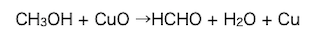
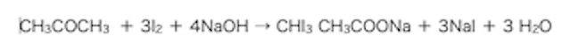

に白金やニッケルを触媒として水素を１分子付加させるとが,
さらに水素を1分子付加させるとが生成される。
また、硫酸水銀(Ⅱ)を触媒としてアセチレンに水を付加させると不安定なを経て
直ちに異性体のを生成する。
アセチレンをアンモニア性硝酸銀溶液に通じると、置換反応により白色のを生成する。
また、3分子のアセチレンの重合反応でを生成する。
正解を見る
アセチレンに白金やニッケルを触媒として、水素を１分子付加させるとエチレンが、さらに水素を１分子付加させるとエタンが生成される。
また、硫酸水銀(Ⅱ)を触媒としてアセチレンに水を付加させると不安定なビニルアルコールを経て、 アセトアルデヒドを生成する。
アセチレンをアンモニア性硝酸銀溶液に通じると、置換反応により白色の銀アセチリドを生成する。
また、3分子のアセチレンの重合反応でベンゼンを生成する。
エチレンは工業的にはの熱分解により合成されるが、
実験室ではと濃硫酸との混合物を160℃〜170℃に加熱すると得られる。
正解を見る
エチレンは工業的にはナフサの熱分解により合成されるが、実験室ではエタノールと濃硫酸との混合物を160℃〜170℃に加熱すると得られる。
酸化銅(Ⅱ)を加熱し、メタノールの液面に近づけるとができる。
正解を見る
酸化銅(Ⅱ)を加熱し、メタノールの液面に近づけるとギ酸ができる。

硫酸銀(Ⅱ)HgSO4を触媒としてプロピンに水を付加させると、
主成分としてが得られる。
正解を見る
-
硫酸銀(Ⅱ)HgSO4を触媒としてプロピンに水を付加させると、主成分としてアセトンが得られる。
アセトンに要素と水酸化ナトリウム水溶液を加えて温めると特異臭を持つ化合物の黄色沈殿を生じる。この反応の化学反応式は？
正解を見る-

アルデヒドRCHOによる銀鏡反応のイオン反応式を次式で表せ
-
こんにちはこちらはアコーディオンのデモテキストです
-
こんにちはこちらはアコーディオンのデモテキストです
-
こんにちはこちらはアコーディオンのデモテキストです